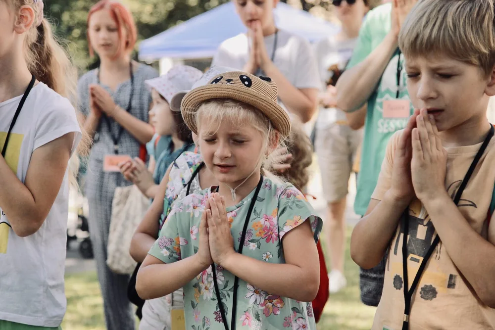

Droga ucznia — siedem kroków
Nie organizujemy pojedynczych wydarzeń. Budujemy całoroczną drogę, którą dziecko przechodzi przez lata — od pierwszego obozu aż po moment, w którym samo staje się liderem i misjonarzem.
Programy całoroczne
Co składa się na rok w życiu naszego ucznia
Każdy krok jest osobnym programem, ale dopiero razem tworzą całość. Dziecko, które przyszło na pierwszy obóz w wieku 7 lat, dziesięć lat później prowadzi własną grupę.
-
Kingdom Kids — obozy letnie
Tygodniowe obozy dla dzieci w wieku 5–15 lat. Dla większości to pierwsze w życiu spotkanie z Ewangelią: gry, sport, zajęcia twórcze, wieczorne spotkania i przyjaźnie, które zostają na lata.
-
Kingdom Kids Clubs
Cotygodniowe kluby prowadzone przez cały rok. Nauka praktycznych umiejętności, budowanie wspólnoty i stała opieka duchowa — dzieci nie znikają nam z oczu po zakończeniu obozu.
-
Revival Camps — obozy przebudzeniowe
Cztero- do sześciodniowe obozy, na których młodzi ludzie budują osobisty fundament wiary. To najczęściej wskazywany przez uczestników moment zwrotny.
-
Jesienna szkoła uczniostwa
Dyscypliny duchowe: modlitwa, samodzielne czytanie Słowa, post i codzienne chodzenie z Bogiem. Uczymy nawyków, nie emocji.
-
Zimowa szkoła uczniostwa
Przebaczenie i uzdrowienie wewnętrzne. Dla dzieci dotkniętych wojną, rozłąką z ojcem albo utratą domu to najtrudniejszy i najważniejszy etap całej drogi.
-
Wiosenna szkoła uczniostwa
Tożsamość w Chrystusie i przygotowanie do ewangelizacji — pierwszy raz, gdy uczeń sam opowiada komuś o swojej wierze.
-
Szkoła misjonarska
Ostatni krok: przygotowanie liderów. Nastolatkowie, którzy przeszli całą drogę, uczą się prowadzić grupy, planować wydarzenia i podejmować odpowiedzialność za kolejne pokolenie dzieci.
Roczne wsparcie dziecka
Co dokładnie obejmuje sponsoring
Sponsorowanie jednego dziecka to nie tylko opłacony obóz. To kompletna, całoroczna opieka — duchowa i całkiem praktyczna.
- Obóz letni Kingdom Kids
- Obóz przebudzeniowy (Revival Camp)
- Kwartalne szkoły uczniostwa — jesień, zima, wiosna
- Ubrania i obuwie na sezon
- Paczki żywnościowe dla rodziny
- Wyprawka i przybory szkolne
- Prezent świąteczny
- Wyjazdy, wycieczki i wyprawy wędkarskie

Nasz wpływ
Ile dzieci objęliśmy programami w każdym roku
Łącznie 20 371 dzieci i młodzieży od 2012 roku. Spadki w latach 2018–2019 to okres budowy bazy misyjnej, a w 2020 — pandemia i przeniesienie służby w teren.
Pytania
Najczęściej pytacie nas o to
Kto może wziąć udział w programach?
Obozy Kingdom Kids są przeznaczone dla dzieci w wieku 5–15 lat. Szkoły uczniostwa i kluby młodzieżowe prowadzimy głównie dla nastolatków od 12. roku życia. Zapraszamy zarówno dzieci z rodzin ukraińskich, jak i polskich — niezależnie od tego, czy rodzina ma jakikolwiek związek z kościołem.
Czy udział kosztuje?
Dla rodziny — nie. Wszystkie nasze programy są finansowane z darowizn partnerów i sponsorów. Dzięki temu na obóz może pojechać dziecko, którego rodziny nigdy nie byłoby na to stać.
W jakim języku prowadzicie zajęcia?
W Rzeszowie pracujemy przede wszystkim po ukraińsku i rosyjsku, ponieważ większość uczestników to dzieci z rodzin uchodźczych. Coraz więcej zajęć prowadzimy również po polsku. Napisz do nas, a powiemy, jak wygląda to w konkretnej grupie.
Jak mogę zgłosić dziecko?
Najprościej przez formularz kontaktowy lub wiadomość na Instagramie. Odpowiadamy zwykle w ciągu kilku dni i podajemy terminy najbliższych obozów oraz spotkań klubu.
Chcę pomóc jako wolontariusz — od czego zacząć?
Wypełnij formularz zgłoszeniowy dla wolontariuszy. Przyjmujemy zarówno osoby na jeden obóz, jak i takie, które chcą zaangażować się na dłużej. Ponad 350 wolontariuszy przeszło już przez naszą służbę.
Jedno dziecko. Jeden rok. 18 dolarów miesięcznie.
To wystarczy, by dziecko przeszło pełną drogę — obozy, szkolenia, ubrania, jedzenie i prezent na święta.